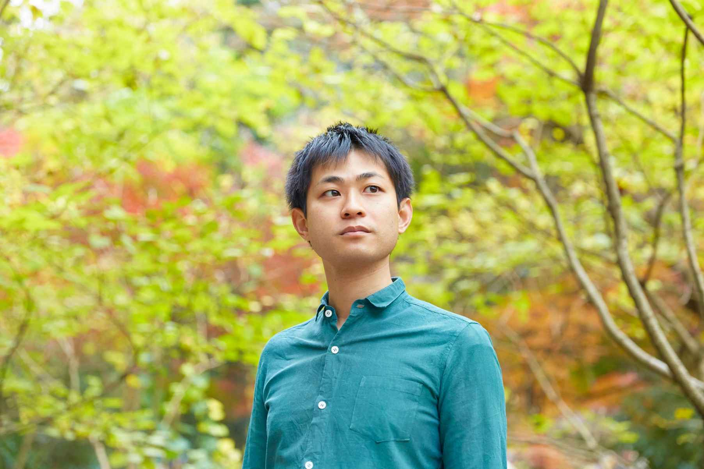
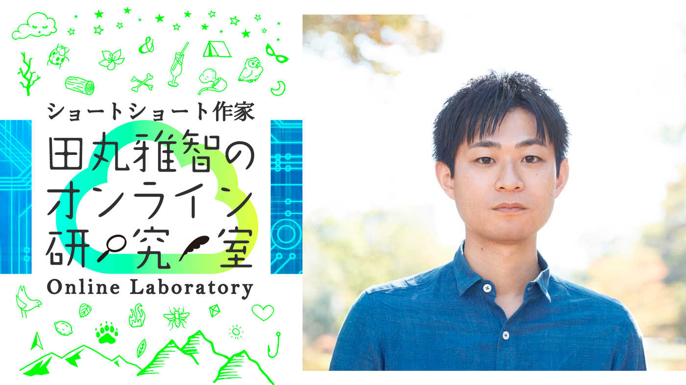

| ショートショートガーデン プチコン受賞作品集 新生活 (PHP電子) | |
| Unknown | |
| 株式会社PHP研究所 (2019) | |
ショートショートガーデン
プチコン優秀作品集
新生活
田丸雅智 編
☆はじめに☆
この作品集は、４００字を上限にしたショートショートの投稿サイト「ショートショートガーデン」 https://short-short.garden/ 上にて2019/2/20～2019/3/20の期間で開催されたコンテスト「プチコン３ 新生活」に応募された作品の中から、ショートショート作家・田丸雅智とショートショートガーデン製作委員会が選定した最優秀作、優秀作の計１５作品を収録したものです。
コンテストには「新生活」というテーマのもと、計１９３作品の応募がありました。
短くて不思議なショートショートの世界を、ぜひご堪能ください。
田丸雅智

【編者紹介】
田丸雅智（たまる・まさとも）
1987年、愛媛県生まれ。東京大学工学部、同大学院工学系研究科卒。
現代ショートショートの旗手として執筆活動に加え、「ショートショート大賞」を自らが発起人となり設立、全国各地で創作講座を開催するなど幅広く活動している。
2017年には400字ショートショートの投稿サイト「ショートショートガーデン」を立ち上げ、さらなる普及に努めている。
主な著書として『色の壜』『夢巻』（双葉文庫）、『芸能人ショートショート・コレクション』（角川春樹事務所）、『たった40分で誰でも必ず小説が書ける超ショートショート講座』（キノブックス）など多数。
ショートショートガーデン
「プチコン３ 新生活」
最優秀作
ダンボリス
のりてるぴか
何もない部屋の中に無秩序に置かれた４６個のダンボール箱を見て僕は後悔していた。箱に何か書いておけばよかった。ダンボールは全て同じ色、同じ形。これじゃ、どの箱に何が入ってるかサッパリわからない。
僕の新生活のスタートは前途多難だ。
とりあえず、箱を整頓してスペースを確保しなきゃ。箱を開けるのはそれからだ。
僕は箱を壁際に丁寧に並べていくことにした。部屋の角に箱を置いて順番に横に並べていくと、ちょうど１０個目の箱を置こうとした時に、ピッタリと部屋の横幅に収まる事に気がついた。
うん。これは気分がいい。
僕は箱を隙間に押し込んだ。
ピカッ...ドスン！
一列に並んだ箱は、一瞬光り輝いた後に跡形もなく消えてしまった。
やった！
スペースが出来た！
次に僕は９個づつ箱を並べて、それを４段積み上げた。
これで部屋が片付くぞ。
僕は壁際の箱一個分の細いスペースに体を滑り込ませた。
ピカッ...ドスン！
田丸雅智の講評
今回のお題である「新生活」から誰もが連想するであろうダンボールという題材に、テトリスとの類似性を見出した発想力に脱帽でした。
そして、ダンボールのみを消していくのかと思いきや、最後にテトリスの特徴と掛け合わせた、さらなるひねりが待っている。全体に本末転倒系のユーモアも漂っていて、お見事でした。
ショートショートガーデン
「プチコン３ 新生活」
優秀作
『朝ご飯』
松山帖句
目を覚ますと、目の前に息子の顔があった。
昨夜、私はこの幸せそうな寝顔を見ながら眠ってしまったようだ。
「起きないと遅刻するよ」
優しく息子の髪にふれると息子は大きな伸びをしながらゆっくりと目を開けた。
「ママ、おはよう」息子が言ったので「おはよう」と私も返した。
一緒に階段を降りていくと炊きたてのご飯とベーコンの焼けた香ばしい匂いがした。夫がYシャツを捲り上げフライパンを洗っている。テーブルの上には朝ご飯がきちんと用意されていた。
私は夫に「おはよう」と言った。
夫が「さあ食べよう」と言ったので私たちは席に着いた。
「あれ、ママのは？」
「今日から二人分だけだよ」
昨日まであった私の朝ご飯だけなかった。
「今日で一年だから。パパね、強くならなきゃって思うんだ」
夫は自分に言い聞かせるように言った。
そしてそれは私の旅立ちを意味していた。
「昨日、ママの夢を見たよ」息子が嬉しそうに笑った。
田丸雅智の講評
「じつは自分が（も）〇〇でした系」のお話はショートショートの王道中の王道ですが、描写が秀逸です。なぜこの日がお話の舞台だったのか、という理由にも必然性があり、家族それぞれの一年間、そしてこれからの未来に思いを馳せ、切なくも温かい気持ちになりました。
ショートショートガーデン
「プチコン３ 新生活」
優秀作
人間の塔
渋谷獏
塔の中は伽藍洞──。
僕は一冊の本を手に塔へ入った。
おわぁぁ、という声がした。
下を覗くと、金色にひかる無数の眼が突然の闖入者を見上げていた。
螺旋は遥か天井へと続き、壁には無数の本が詰まっていた。
忘れ去られた本たちを手に取りながら階段を登る。
物語や詩集に論説、ただの日記のようなものもある。或いは、全く意味の分からない文字の断片もある。
それらの本をじいっと眺めていると、背後に人の気配を感じた。
振り向くと女がいた。
ナンテ瞳だろう。
黒く、
大きな、
さからいがたい、
｢君は......」
｢さあ、あなたの物語を預かりましょう」
彼女は僕の持ってきた本を受け取り、書棚へ収めた。
｢新しい世界に書物は必要ありませんが、ここに来ればいつでも閲覧できます」
ああ、この人が塔の番人か......。
女に別れを告げ、の中へと還ってゆく。
きらきらと照らされた塔を背に、僕は泳ぐ速度を速めていった──。
田丸雅智の講評
（作中で明言されてはいませんが）人生を書物に見立てるという発想自体はよくありますが、舞台の描き方がお見事です。静かで、神秘的で、つかめるようで、つかめない。曖昧な雰囲気に魅せられました。結末に出てくる「海」が、さらに広大で未知な世界を予感させ、じつに効果的です。
ショートショートガーデン
「プチコン３ 新生活」
優秀作
新社会人
さささ ゆゆ
「斎藤くん。内定決まったよ！おめでとう」
凸凹就活エージェントの[就職プレスプログラム]を受けると、瞬く間に一流企業に勤められるという噂は本当だ。
しかしまだそのプログラムは受けてない。いつもだったら尻込みするような企業にエントリーをするように進められ、エントリーシートを提出、すぐ内定をもらった。
「本当に僕が内定なんでしょうか？」
「ああ紛れもない事実だよ。そのかわりプレスプログラムは受けてもらうよ」
担当者はそう言うと僕を隣の部屋へ案内した。
プレス室
人型をしたステンレスが部屋の中央にある。
「その人型のベッドの上に仰向けになってください。絶対動かないでください。目を瞑って楽にしでください」
頭上にある人型が落ちる
スーツを着た爽やかな男性の型だ。
ビー ガッシャーン
プレスされ、企業の求めていた形に加工された。
新しい自分
新しい世界
僕は新生活を規則正しく遂行する。
田丸雅智の講評
就活の負の側面がディストピア的に昇華されていて、風刺的でおもしろかったです。
内定が決まったことで主人公がプログラムを受けざるを得なくなるという流れも、就活生の心理を巧みについていてお上手でした。
プレスにちなんだ「凸凹就活エージェント」という名前も、よく考えられていて素晴らしいです。
ショートショートガーデン
「プチコン３ 新生活」
優秀作
断捨離キャリー
みきやん
『人生に必要なものは、片手で持ち歩ける。』こんなキャッチコピーで大流行中なのが、その名も『断捨離キャリー』。その人の人生に必要な物しか入らないというキャリーケースだ。
近く同棲を考えている私と彼も、各々キャリーを買って持ち物を吟味することにした。
本にお鍋にCD。私に必要な物がぴたりと収まっていく。だけどおかしい。今シーズン一度も袖を通さなかったセーターだけじゃない、彼に貰ったピアスもお揃いの時計も上手く入らない。彼は私の人生に必要ないってこと？
「ああ、僕も入らなかった、それに君自身を入れるスペースもないみたいだ」
電話越しに彼が笑う。笑い事じゃない！
「でもキャリーの周りに飾ってみたら、ずいぶん彩りの良いキャリーになったよ」
戸惑う私に構わず彼は続ける。
「キャリーには入れてあげられないけど、空いた方の手を繋いで一緒に歩かないか？君は、僕が人生で唯一手にしたい"余分なもの"だからさ」
田丸雅智の講評
冒頭の「人生に必要なものは、片手で持ち歩ける」というコピーがいかにもありそうで、一気に引き込まれました。
セーターやピアスなどのさりげない描写もリアリティーがあり、不思議な設定に説得力を与えています。キャリーの特徴をうまく活かした結末もお見事でした。
ショートショートガーデン
「プチコン３ 新生活」
優秀作
そこは白線につき
ことのは もも
僕の父さんはとても真面目だった。
信号を渡るときは必ず白線を踏んで渡った。当時まだ小さかった僕はその白線をピョコンと飛んで父さんに着いてった。
高校生の頃父さんは亡くなったけど、僕は白線がある所では絶対にその上を歩いた。だって天国から僕を見守ってるから。
就職で越してきたある日、散歩していたら細い路地を見つけた。その端には白線が引いてある。何故だろう？でもとにかく白線に出会ったからにはその上を歩かなければならない。
幅8cm程のそこからずれないように慎重に歩を進めていると、向こうから同じ様に白線の上を歩いてる人が来た。
だが譲るわけにはいかない。が、相手も避けることなく近づいてくる。そしてあと数十センチのところで漸く互いに立ち止まると、相手は「白線？」と聞いてきた。
喫驚したがしっかり目を見て「はい」と答えると、その紳士は莞爾として譲ってくれた。僕たちは握手を交わし、再び歩きだした。
田丸雅智の講評
白線の上を歩く遊びは誰もが一度はやったことがあるのではないでしょうか。その遊びを、主人公が亡き父親との接点にしているという設定に惹かれました。
さらに、同じ習慣をもった相手が登場することで世界は一気に広がります。
その相手とのやり取りに説明が少ないことで、作品に深みが与えられていると感じます。
ショートショートガーデン
「プチコン３ 新生活」
優秀作
ショートショート「内来種」
佐賀砂有信
こんにちは！僕、耳ヤドカリ！
人間の耳に住み着くヤドカリだよ！
耳の奥の蝸牛、くるんってしたところに、僕の尻尾をくるんって入れるの。
そしたら皆、くるんって白目を剥いて、僕のおうち兼移動手段になるんだ。面白いよね！
ところでもうじき春だねー！
耳ヤドカリにとっても、お引越しの季節。
かくいう僕も、新居を探し中。
冬に使ってたおうちが、臭い始めちゃってさ。
という訳で、君！
僕のおうちになってくれない？
仕事したくないんでしょ？
代わりに僕が君の身体で働いてあげるよ！
ＯＫ？ありがとう！
実はもうひとつ頼みがあってさ。
これ、僕の彼女。
僕が右耳、彼女が左耳で、君をシェアしても、いいかなあ？
「あの新入社員、どう思う」
「熱心に働いてるね。白目剥いてるけど」
「でも、なんでも自己流だろ」
「確かに。注意とか指示とか全然聞かないな」
「だろ。もう誰にも、耳を貸さないんだろうな」
田丸雅智の講評
耳の穴の形とヤドカリの棲み処の形との類似性に着目した点がお見事です。
高めのテンションで恐ろしいことをさらっと言わせることで、狂気がうまく増幅されています。
結末の一文もシェアという伏線がきいていて、素晴らしい切れ味でした。
ショートショートガーデン
「プチコン３ 新生活」
優秀作
また、ふたりで
すみれ
一人暮らしをはじめて、もう30年が経った。こっちにやってきたときは、どうしたらいいか...と悩んでばかりだったが、もうすっかりこっちに慣れてしまった。空気は澄んでいて、皆優しい人ばかり。一軒家に住みながら、ゆったりとした生活をしている。
仕事は、家の近くにある図書館で司書を。休みの日には、家でのんびり映画鑑賞。最近始めた家庭菜園、あれはかなり面白い。
一人暮らしだと、寂しいと思うときもある。ここに来たときは、ひどかった。でも、数年前から猫と暮らしているから、寂しさは少しばかり減った。
寂しいなら、一軒家になんて住まなくて良いのに...と良く言われるが、一軒家にこだわる理由があるのだ。
それはーーー。
チャイムが鳴る。
玄関に向かい、ドアを開けると...。
「また、会えたわね、貴方」
愛しい君が泣いていた。
「またふたりで、新しくはじめよう。天国《ここ》で...」
田丸雅智の講評
今回、「新生活＝あの世での生活」というアイデアが多くあった中、本作はシンプルにまとめられていて、アイデアに対する素直さがいいなと感じました。
多くの文字数を前半の日常の描写に使うことで、結末のあとにはじまるであろう穏やかで幸せな日々を描かずして描くことに成功しています。
ショートショートガーデン
「プチコン３ 新生活」
優秀作
眼窩の空
イチフジ
チチッ......
会議室で小鳥の囀りが聞こえた。
「先輩。それは鎖骨です」
床に転がる頭蓋骨が、私の持つ人骨に向けてそう言った。
私は今年度最後の企画コンペで、見事に当たって砕けた後輩の骨を拾っていた。
「惜しかったな」
「先輩。言わなくちゃいけないことが」
「何......あ、これは頸椎か」
「今月で会社を辞めます」
首を組み立てていた手を止める。
「どうして」
「実は......夢だったんです。医者になることが。来月から5年間、勉強するんです」
頭蓋骨を持ち上げる。
「あ」
後輩の眼窩に映る澄みきった青空に、私は目を奪われた。
360度、自由な空。
まるでジェットコースターに乗ったときのような、腰がふわっと上がる感覚に足がすくんだ。
ヒュッ......！
頬をかすめて眼窩に飛び込む小鳥。
私は気を取り直し、頭蓋骨を首に嵌めた。はずれることが無いよう普段より丁寧に、力をこめて......
「先輩。頭、逆です」
田丸雅智の講評
会議室で骨に話しかけられているというシュールな設定に魅了されました。
当たって砕けた後輩、という一文が説得力をもたらしてもいます。
そして、骨による突然の夢の告白。そのシュールさに笑いつつ、美しい青空に圧倒されます。
ラスト一文も、それまでの会話のユーモアが伏線としてうまく効いていて、素晴らしいです。
ショートショートガーデン
「プチコン３ 新生活」
優秀作
新生活入荷しました
techtech
いらっしゃいませ。新生活をお求めですね？ いいタイミングですよ。ちょうど各社が新生活を発売したところでして。
こちらなどいかがでしょう。「春から人気者新生活セット」。フォロワー数１万人のアカウントとサポートの幼馴染(役)つき。
こんなのもございます。「スタートダッシュ新生活セット」。やりがい十分な課題一式にエナジードリンク一年分とメンタルトレーナーもついてきて、五月病回避もバッチリです。
ああ、もっとスローライフ的なものをお望みで。こちらの「のんびり地方公務員生活セット」はいかがです？ 地域貢献しながら安定確実な暮らしを。お好みで地元名士とのお付き合いオプションも。
はあ、世間の人間関係に疲れたと。では「花と音楽あふれる清浄な土地で新生活セット」。かなり西のほうですが、いい場所らしいですよ。お値段？ 全然お高くありません。ちょっと往生していただくだけですから。
田丸雅智の講評
新生活というもの自体を商品やサービスに見立てた作品は他にもありましたが、本作はそれについてくるもののディティールが素晴らしく、ほんの少し含まれている風刺的な要素もナイスなスパイスになっていました。
全体に漂う話し手のいい加減そうな雰囲気も、結末をより際立たせていると感じました。
ショートショートガーデン
「プチコン３ 新生活」
優秀作
桜前線の桜庭さん
ぱせりん
「こんにちは」
律子は桜並木の通学路でランニングをしている女性に挨拶をした。
「こんにちは」
笑顔で応えてくれた女性は、この辺りではあまり見ない美しさだった。
家に帰って話をすると、母が教えてくれた。
「きっと、桜前線の桜庭さんね。桜庭さんが走ったところから桜が満開になっていくのよ」通学路の桜並木は確かに満開になっていた。
それから毎年、律子は会うたびに挨拶をし、やがて少しずつ話をするようになった。
「桜庭さん、こんにちは」
「こんにちは、律子ちゃん。だいぶ背が伸びたわね」
今年の桜庭さんは例年になく急いでいた。
「ごめんね、律子ちゃん。今年は前線の北上が速くて、うかうかしてられないの」
律子は勇気を出して尋ねた。
「私、高校で陸上部に入ったんです！途中まで一緒に走ってもいいですか？」
桜前線を追いかける律子のスニーカーのリズムに合わせて、沿道の桜がひらひらと舞い散っていった。
田丸雅智の講評
桜前線を擬人化するというアイデア自体は珍しくはありませんが、それを「桜庭さん」とビシッと置いたところが秀逸でした。
毎年の桜庭さんとのささやかな交流も素敵で、時間の経過も会話の中でさりげなく描かれていてお見事です。
陸上部への入部という爽やかな結末も、モチーフにふさわしいものでした。
ショートショートガーデン
「プチコン３ 新生活」
優秀作
ハローライフ
ゆた
「新生活、どう？」
「全然だめ。やっぱり今年も新生活市場は厳しいわ......」
すでに新生活を終えた綾子を前に、私は頭を抱えた。
新生活なんて、誰もがうまくいくわけじゃない。
特に今年は新生氷河期と呼ばれるほどに、先行きが不透明なのだ。私ももうすでに、何件のお祈りをいただいたか知れない。
「あの人どうかな。終活真っ只中って感じじゃない？」
「うーん、でも元気そう」
「エントリーくらいはいいでしょ。ポチっと」
私の手元の端末が、エントリーボタン表示を現在のエントリー人数に切り替える。
五八〇人。
これが今回のライバルの数。
そのあまりの多さに眩暈を覚えていると、突然、隣の綾子が光に包まれて消えた。
ついに、か。
少子化の日本での新生活動は、正直無謀だ。
だからもう国籍は問わない。とにかく早く、内定がほしい。
私は焦燥感を募らせながら、輪廻に乗った綾子が新しく宿った音を、意識の向こうで聞いた。
田丸雅智の講評
「新生活」という言葉を「就活」のようにとらえた着想がお見事でした。
現実の就活に掛けて描いていくことで、転生のためにあの世でも熾烈な争いが繰り広げられている様がありありと浮かんできます。
なぜ内定が難しいかの理由が明かされたとき、なるほど、と膝を打つ思いでした。
ショートショートガーデン
「プチコン３ 新生活」
優秀作
随筆 「新生活」に寄せて
新出既出
インターネットから『週刊・新生活』に随筆を求められたので書いてみる。
生活環境が変化して十年。今朝は表に雉の声を聴いた。起き上がるとシーツの襞が作る影がおもしろく、スケッチしていると妻が「西京焼きを焦がしました」と言う。『雉啼くや西京焼きの焦げし朝』と詠んですこぶる気分がよい。
インターネットのニュースを見る。隣県では鶯が鳴いたそうだ。「うちはどうかね？」と妻に尋ねると、「来週くらいの予報だそうですよ」と、SNSで仕入れた話を披露する。私は焦げた西京焼きを絵手紙風に書きながら、『初啼きに渡り初めたる谷間かな』と季の判然としない句を詠み捨てる。
今日は配給日なので、各所のフィルターを交換し、汚物パックと共に隔離壁の外へ出す。エアパッキンの調子が悪く、咳き込む。
皆様と同じく地下の狭いシェルターに過ごす身ではあるが、スケッチと俳句のおかげで、私にとっては時々刻々が『新生活』である。
田丸雅智の講評
描写や俳句などがじつに趣のあるものになっていて、随筆という形式にリアリティーを与えていました。
そして、古風な雰囲気から一転して明かされる現実世界との落差にドキッとしつつ、それでも貫かれる粋な感じが不思議な読後感をもたらしてくれました。素晴らしい異色作です。
ショートショートガーデン
「プチコン３ 新生活」
優秀作
アパートの花子さん
中谷直樹
格安アパートにおかっぱ着物の女の子が居た。
「わたし、トイレの花子さん。よろしく」
四月から憧れの一人暮らし、の筈だった。
「大丈夫。生前と違って今はルームシェア？も普通だし」
『生前』と書いて『むかし』と読むな。大体、ここは学校でもトイレでもない。
「わたし、常識に縛られるの嫌いだから」
地縛霊じゃん。めっちゃ縛られてんじゃん。
「気が晴れたら成仏できると思う」
奇妙なルームシェアが始まった。
花子さんと私はたくさんおしゃべりをした。流行りのスイーツ、きれいな服、好きな男の子の話まで。
「あー、すっごく楽しい。あなたは？」
突然聞かれて驚いた。「楽しい」なんて気持ち、生きてる時には感じたことなかったから。
その瞬間、気が晴れた私は春の空に舞い上がった。そっか。私は友達が欲しかったんだ。
「また来世ね」
『来世』と書いて『こんど』と読むな。
花子さんの声が桜の花びらみたいに風に舞った。
田丸雅智の講評
「生前」と書いて「むかし」と読んだり、地縛霊なのに縛られるのが嫌いだと言う花子さんへのツッコミに思わず笑ってしまいつつ、現代的な幽霊像の描き方に惹かれました。
形としては王道の「じつは自分が（も）〇〇でした系」ですが、贅沢にも最後に「来世」という言葉でさらにひとひねりがあり、感服でした。
ショートショートガーデン
「プチコン３ 新生活」
優秀作
ニューライフセーバー
そるとばたあ
満開の桜。
俺と後輩は、大勢の花見客で賑わう会場の監視中。
「先輩！救助者を発見です」
双眼鏡を覗く後輩の声。直ちにゴムボートで急行。
酒に溺れた新入社員だ。
酒と不満を吐かせ、水を飲ませる。
「先輩！向こうで、うぬぼれた新入社員がぷかぷか浮いています」
『軌道確保し、マウストゥーアリガトウゴザイマウスだ！』
俺はその新入社員に感謝をチュウ入。
彼の良さを残しつつ、地に足もつくはずだ。
『瀬崎、今日は上がっていいぞ』
「でも」
『客も減ってきたからな。ゆっくり休め』
「はい！」
瀬崎は、この春に配属された期待の新人。まだ経験は浅いが、大事に育てたい。
ん？あれは瀬崎。
『おい！今日は上がれって......』
そこまで口にして、俺は隠れた。
『仕事とプライベートは違うが、やればできるじゃねぇか』
桜の木の下には、瀬崎と彼女。
『溺れるんじゃねぇぞ』
桜舞う春の空を泳いで、俺は救助へと戻っていった。
田丸雅智の講評
酒に溺れるという言葉遊び系の着想から「うぬぼれた新入社員」へと発展していくなど、展開の仕方が素晴らしかったです。
そのままの方向で結末にもっていっても十分おもしろくなりそうなところを、場面転換。別の「溺れる」を異なる角度から描きだすという、じつに野心的でお見事な作品でした。
◆おわりに◆
創作は楽しい！
ぼくはそれを伝えることを一番に、全国各地でショートショートの書き方講座を開催しています。その根底には、プロでやるにしても、趣味でやるにしても、最後は楽しいからこそつづけられる、という持論があるからです。もちろん、特にプロの場合の創作は楽しいことだけではまったくないわけですが、それでも、やっぱり最後は楽しい。だからこそ、自分も書きつづけてこられました。
コンテストとなると、どうしても順位がついてしまい、結果に一喜一憂してしまうこともあるかと思います。ぼく自身も、かつてはそうでした。ですが、どんなときも、どうか楽しむ気持ちを忘れないでいただきたいです。細くとも長く、楽しみながらショートショートに親しみつづけてほしいと願っています。
もう一度、声高らかに。
創作は楽しい！！
2019年4月 田丸雅智
『ショートショートガーデン プチコン受賞作品集 新生活』を読んでくださったあなたへ
「田丸さん、そんなお話まで公開してしまっていいんですか？」
文章を書く、絵を描く、写真を撮る、演奏する......
ネットを通じて手軽に発信ができる今、あなたの創造性が試される場面が増えたと思いませんか？
クリエイティビティを身につけたい。イノベーティブな発想力を磨きたい。そう痛感するタイミングが多くあると思います。
そんなあなたは本作品の編著者・田丸雅智がひそかに運営するオンラインサロン「ショートショート作家・田丸雅智のオンライン研究室」をご存知ですか？

このサロンは、田丸雅智の作家としての活動の裏側、様々なクリエイターとの交遊を通した発信やサロン内でのイベントを軸に、仲間が集まってで密かに語り合える場所なのです。
このサロンの主宰は田丸雅智ですが、主役は会員のみなさんです。
まだまだ成長途上なサロンですが、一緒に創作論で盛り上がったり、感性を共有しあえる仲間を募集しています！
詳しくは「田丸雅智 オンラインサロン」で検索！
ショートショートガーデン プチコン優秀作品集 新生活
編者：田丸雅智
© Masatomo Tamaru
初出：この電子書籍はオリジナル編集作品です。各ショートショート作品はショートショートガーデン https://short-short.garden/ で開催されたショートショート作品コンテスト「プチコン3 新生活」に応募された作品によって構成されたものです。
本書の無断複写（コピー）は著作権法上での例外を除き、禁じられています。